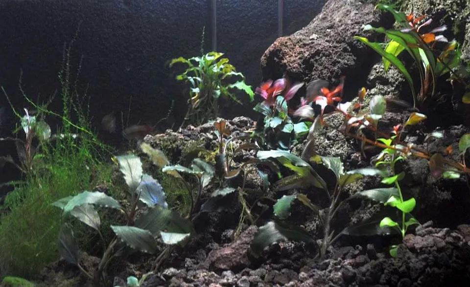
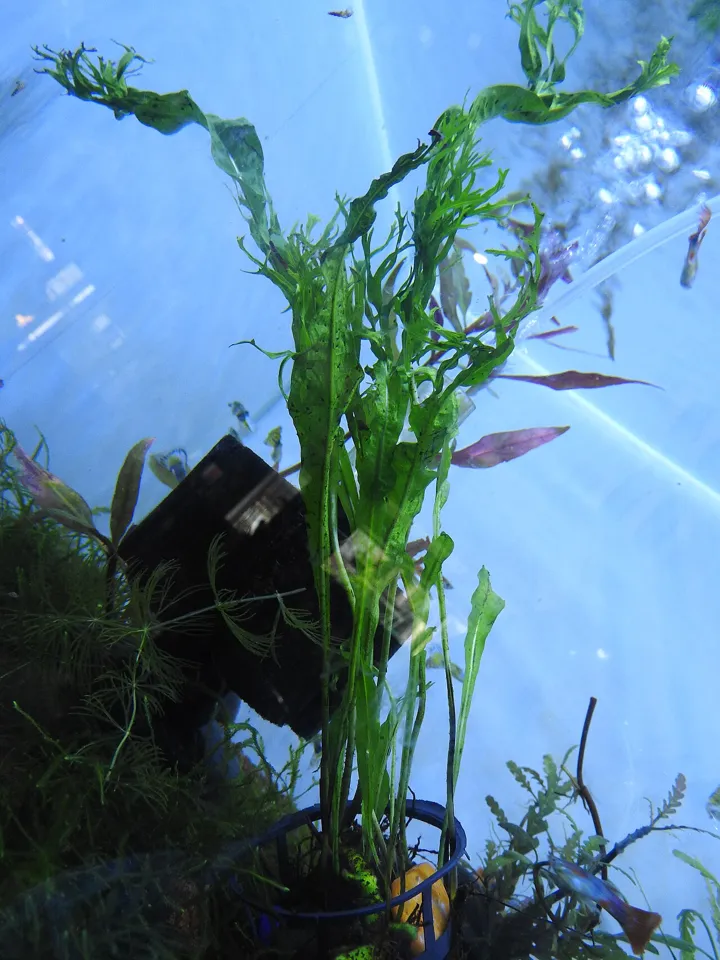
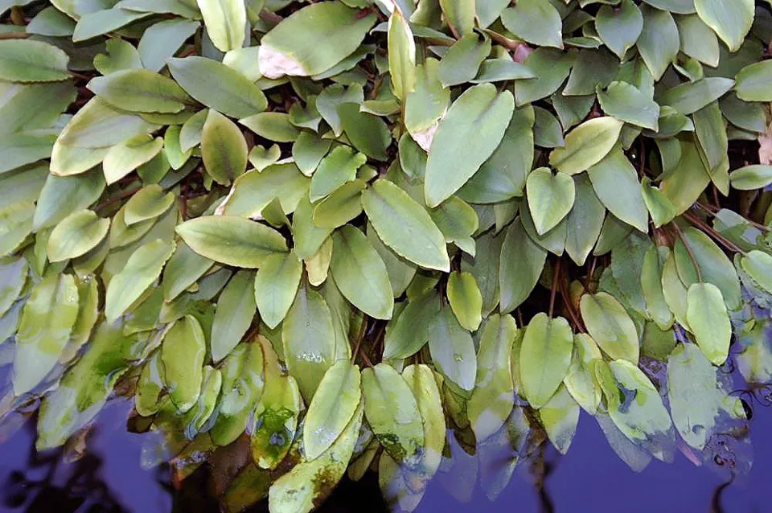

p-bucephalandra-red Bucephalandra Red · Bucephalandra sp. «Red» · Epífita Manuel Werner / CC-BY-SA-4.0 Werner, Deutschland · CC BY-SA 4.0
Foto de la especie, no del cultivar
0 ✓ · commons1 · commons

p-bucephalandra-wavy-green Bucephalandra Wavy Green · Bucephalandra pygmaea «Wavy Green» · Epífita Manuel Werner / CC-BY-SA-3.0 Werner, Deutschland · CC BY-SA 4.0
Foto de la especie, no del cultivar
0 ✓ · commons

p-helecho-de-java Helecho de Java · Microsorum pteropus · Epífita Yercaud-elango · CC BY 4.0
p-cryptocoryne-undulata-red Cryptocoryne undulata Red · Cryptocoryne undulata «Red» · Roseta

p-cryptocoryne-petchii Cryptocoryne Petchii · Cryptocoryne beckettii «Petchii» · Roseta (c)
Photo by David J. Stang, some rights reserved (CC BY-SA) · CC-BY-SA


.jpg)

_8469.JPG)


.jpg)


_(20219663563).jpg)
_(20662263132).jpg)


_(20483505978).jpg)
_(20729980501).jpg)

_(19739744542).jpg)


_(20678214831).jpg)


.jpg)
.jpg)
.jpg)


_(20483486750).jpg)
_(20536359359).jpg)
_(14597788079).jpg)
_(14597744200).jpg)


_(20645232506).jpg)
.jpg)


.jpg)
_(20548390678).jpg)
.jpg)


_(20113215804).jpg)
_(14597813668).jpg)
_(20743261431).jpg)
.jpg)
.jpg)


_(19558348610).jpg)
_(19558634108).jpg)
_(20710158106).jpg)
.jpg)


_(20696888386).jpg)


_(20548399810).jpg)
.jpg)


_(19558618540).jpg)
_(20652679938).jpg)
_(19720454486).jpg)


.jpg)


_(20113270474).jpg)


_(20678239131).jpg)
_(20483519970).jpg)
_(20730028501).jpg)
_(20535114480).jpg)


_1.jpg)
_(20662292742).jpg)


.jpg)